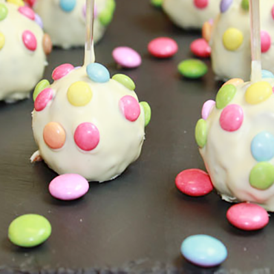

Les ingrédients
- 180g de beurre
- 4 petites boîtes de mini Smarties
- 1 tablette de 200g de Chocolat Nestlé Dessert Noir
- 1 tablette de 180g de Chocolat Nestlé Dessert Blanc
- 4 œufs
- 130g de sucre
- 80g de farine
- 2 cuillères à soupe de fromage blanc
La recette
- Demande à un adulte de préchauffer le four à 200°C.
- Fais fondre le chocolat noir et le beurre au four à micro-ondes 3 minutes à 500W.
- Dans un saladier, mélange les œufs, le sucre et la farine. Puis verse le chocolat noir fondu et mélange pour avoir une pâte bien lisse.
- Verse ta pâte dans un moule beurré et fariné puis enfourne le gâteau pour 22 minutes au four. Une fois la cuisson terminée, démoule le gâteau et laisse-le refroidir.
- Emiette le gâteau et ajoute 2 cuillères à soupe de fromage blanc. Malaxe le tout pour faire une pâte. Il est temps de former des boules bien fermes d’environ 20g. Dépose-les ensuite dans une assiette avec du papier sulfurisé et place les au réfrigérateur pour 1 heure.
- Fais fondre le chocolat blanc en pépites au four à micro-ondes (2 minutes à 500W). Sors les boules du frigo et pique les avec un bâtonnet. Roule les boules dans le chocolat blanc et dépose-les sur une grille avant de coller des smarties.
- Pour finir, place les pop cakes au chocolat blanc et smarties au réfrigérateur pour 10 minutes avant de les déguster !